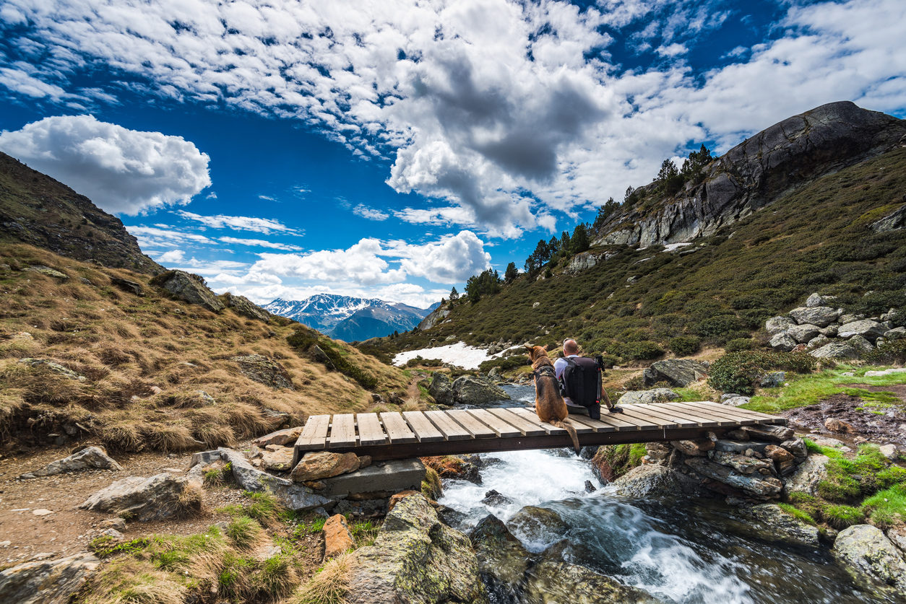
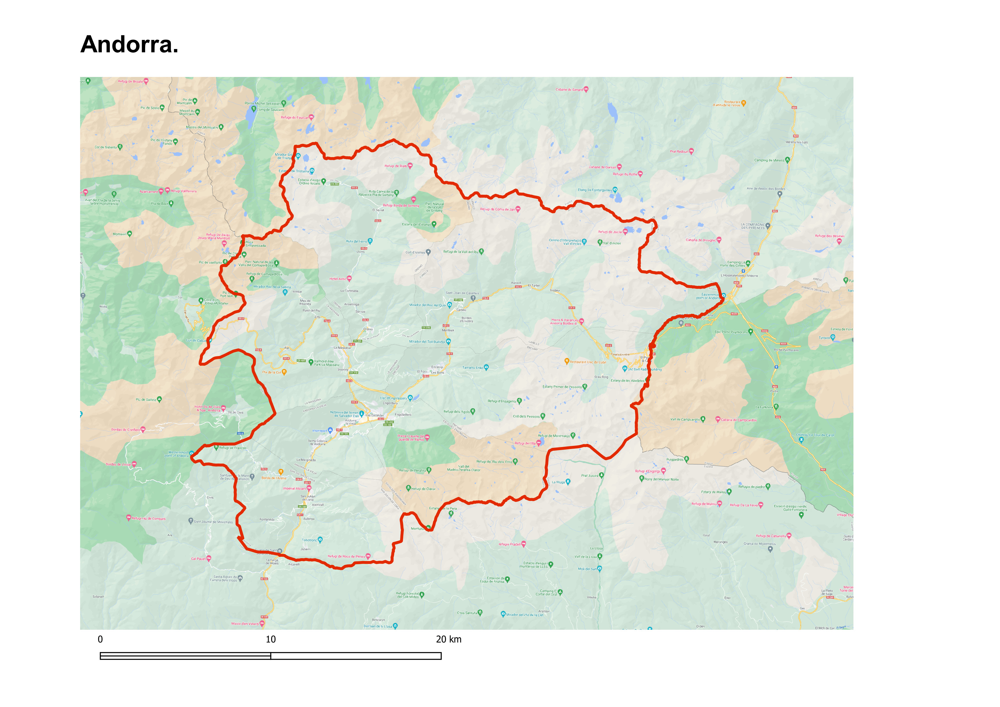

HIKLIMATE. Pretén potenciar la capacitat d’un servei climàtic a un sector turístic com és el senderisme en un país petit com Andorra.
Analitzar la variabilitat climàtica depenent del punt del territori on ens trobem.
Establir les condicions meteorològiques òptimes per a dur a terme l’activitat de senderisme en els diferents itineraris del territori.
Definició de les variables (longitud, latitud, temps i LCC (Baixa Coberta Nuvosa)) extretes del Centre Europeu de Previsions Meteorològiques a Mitjà Termini.
Procés de co-creació participatiu i actiu amb multiplicitat de condicionants: meteorològics, d'accessibilitat i temporals